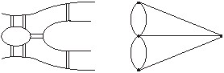
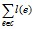

электронный
ресурс по учебной дисциплине
1-40 02 01 «Вычислительные машины, системы и сети»
|
||
| Оглавление | Программа | Теория | Практика | Контроль знаний | Об авторах | ||
Г л а в а 8
Обходы графа
8.1. Эйлеровы цепи и циклы
Началом теории графов считается работа Л. Эйлера, опубликованная в 1736 г., в которой он решил задачу о кёнигсбергских мостах. На протекающей через город Кёнигсберг реке Прегель расположены два острова, которые были соединены семью мостами между собой и с берегами реки (рис. 8.1, а). Эйлер задался целью определить, можно ли, гуляя по городу, обойти все семь мостов, пройдя каждый из них ровно один раз. Для этого он сформулировал следующую задачу: в заданном связном графе (или мультиграфе) выделить цикл, содержащий все ребра данного графа. В исходной задаче острова и берега соответствуют вершинам графа, а проходы по мостам представлены ребрами. Соответствующий мультиграф изображен на рис. 8.1, б. Эйлер показал, что в данном случае задача решения не имеет.

а) б)
Рис. 8.1. Задача Эйлера: а) план кёнигсбергских мостов;
б) соответствующий мультиграф
Цикл, содержащий все ребра графа, носит название эйлерова цикла. Цепь, содержащая все ребра графа, называется эйлеровой цепью.
Т е о р е м а Э й л е р а. Связный неориентированный граф имеет эйлеров цикл тогда и только тогда, когда степени всех его вершин четны. В связном неориентированном графе существует эйлерова цепь тогда и только тогда, когда он имеет не более двух вершин с нечетной степенью.
Граф, имеющий эйлеров цикл, называется эйлеровым графом.
Эйлеров цикл можно найти в эйлеровом графе алгоритмом Флёри, который заключается в построении последовательности ребер, определяющей искомый цикл. При этом должны выполняться следующие правила.
1. Идем из некоторой вершины по ребру и удаляем каждое пройденное ребро, помещая его в получаемую последовательность. Начальная вершина выбирается произвольно.
2. Отправляясь из очередной вершины, никогда не идем по ребру, удаление которого делает граф несвязным.
Если граф имеет две вершины с нечетной степенью, то в нем можно найти эйлерову цепь, начиная поиск с одной из этих вершин, и заканчивая другой. При этом следует выполнять те же правила, что и при поиске эйлерова цикла.
Обобщением задачи Эйлера является известная задача китайского почтальона, которая имеет приложение, например, при проверке электрических сетей и ставится следующим образом. Каждому ребру ei графа G приписывается положительный вес с(ei) (расстояние). Требуется найти маршрут, проходящий через каждое ребро графа G по крайней мере один раз и такой, что сумма величин nic(ei), где ni – число прохождений ребра еi, минимальна. Если граф является эйлеровым, то любой такой маршрут представляет собой эйлеров цикл, а данная сумма одинакова для всех эйлеровых циклов и является суммой весов всех ребер.
8.2. Гамильтоновы цепи и циклы
Цикл называется гамильтоновым, если он проходит каждую вершину графа ровно один раз. Другими словами, это остовный цикл графа. Гамильтоновой цепью называется цепь, проходящая каждую вершину графа ровно один раз. Граф, содержащий гамильтонов цикл, называется гамильтоновым графом.
На первый взгляд задача нахождения гамильтонова цикла в графе сходна с задачей нахождения эйлерова цикла. На самом же деле эти задачи принципиально различны. Для распознавания гамильтоновости графа не существует такого простого способа, как для распознавания эйлеровости графа. Поиск гамильтонова цикла или гамильтоновой цепи в графе значительно более трудоемок, чем поиск эйлерова цикла или эйлеровой цепи.
Рассмотрим один из способов построения гамильтонова цикла в графе.
Пусть вершины заданного графа G = (V, E) пронумерованы в произвольном порядке: v1, v2, … , vn. Для каждой вершины vi сформируем список смежных с ней вершин, расположив вершины в списке в произвольном порядке. Будем представлять цикл в виде последовательности вершин С. В качестве отправной возьмем первую в порядке нумерации вершину v1 и объявим ее первым элементом получаемой последовательности С. К вершине v1 припишем вершину vj, первую в списке v1, в результате чего получим С = (v1, vj). Обратимся к списку vj, выберем из него первую вершину vk, не присутствующую в последовательности С, и, присоединив ее к С, получим С = (v1, vj, vk). Затем обратимся к списку vk, проделаем то же самое и т. д. Пусть получена последовательность С = (v1, vj, vk, … , vq, vr), не содержащая всех вершин из V, но в списке vr нет вершин, не содержащихся в С. Тогда делаем шаг назад и в списке vq выбираем вместо вершины vr следующую по порядку вершину. Если и там такой вершины нет, делаем еще шаг назад и обращаемся к списку предшествующей вершины и т. д. В результате либо получаем искомую последовательность, когда все вершины из V вошли в С, либо, возвращаясь к списку v1, обнаруживаем, что он оказывается исчерпанным. В последнем случае граф не имеет гамильтонова цикла.
Продемонстрируем описанный процесс на примере графа, изображенного на рис. 8.2. Данный граф можно задать перечислением списков окрестностей вершин:
v1: v2, v4, v5, v6;
v2: v1, v3, v4, v5;
v3: v2, v4, v5;
v4: v1, v2, v3, v6;
v5: v1, v2, v3;
v6: v1, v4.
Сначала получаем последовательность С = (v1, v2, v3, v4, v6) и в списке v6 нет вершин, не присутствующих в данной последовательности. Шаг назад приводит к последовательности С = (v1, v2, v3, v4). В списке вершины v4 также нет вершин, не присутствующих в последовательности С. Возвращаемся к С = (v1, v2, v3) и получаем последовательность С = (v1, v2, v3, v5). Затем получаем последовательности с тупиковыми вершинами С = (v1, v2, v4, v3, v5), С = (v1, v2, v4, v6) и, наконец, последовательность С = (v1, v2, v5, v3, v4, v6, v1), которая представляет искомый гамильтонов цикл. На рис. 8.2 выделены ребра, принадлежащие полученному гамильтонову циклу. Таким же способом можно построить гамильтонову цепь.
Рис. 8.2. Граф с гамильтоновым циклом
Обобщением задачи поиска гамильтонова цикла является известная задача коммивояжера, которая состоит в том, что в заданном графе с взвешенными ребрами надо найти маршрут, проходящий через каждую вершину не менее одного раза и обладающий минимальной суммой весов ребер среди всех таких маршрутов.
8.3. Кратчайшие пути в графе
Задан связный граф G = (V, E) с ребрами, взвешенными действительными положительными числами. В данном случае вес ребра e = vivj будем считать его длиной l(e) = l(vivj). Требуется найти цепь с минимальной длины, соединяющую две заданные вершины в графе G, т. е. такую цепь, для которой величина  минимальна.
Для решения этой задачи можно применить алгоритм Форда, который заключается в следующем.
Пусть в графе G надо найти путь от вершины v1 к вершине vn. Каждой вершине vi ∈ V припишем индекс λ(vi). При этом положим λ(v1) = 0 и λ(vi) = + ∞ для i ≠ 1.
На каждом шаге алгоритма отыскивается ребро vivj, для которого λ(vi) – λ(vj) > l(vivj), и индекс λ(vi) заменяется на λ′(vi) = λ(vj) + l(vivj). Повторение таких шагов продолжается, пока находятся ребра, для которых выполняется данное неравенство.
В результате выполнения данной процедуры определяется длина кратчайшего пути, равная λ(vп). Сам путь надо строить, начиная с вершины vп и двигаясь обратно к вершине v1. При этом всякий раз надо выбирать такую вершину vj после вершины vi, чтобы выполнялось равенство λ(vi) – λ(vj) = l(vivj).
Пусть в графе на рис. 8.3 требуется найти кратчайший путь из вершины v1 к вершине v8. Возле каждого ребра дана его длина. Покажем изменение индексов вершин:
Рис. 8.3. Граф со взвешенными ребрами и выделенным кратчайшим путем
Длина кратчайшей цепи в данном графе равна 15. Двигаясь от вершины v8 к вершине v1, подходим сначала к вершине v6, так как λ(v8) – λ(v6) = l(v6v8) = 2. Следуя тому же правилу, проходим вершину v5 и затем вершину v2. На рис. 8.3 выделены ребра, принадлежащие найденному пути.
| (С) БГУИР |